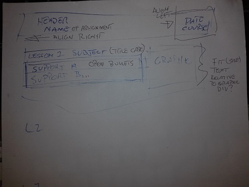
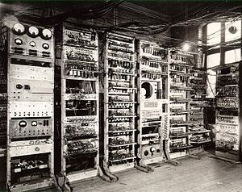

project 1 lesson 2: concepts not previously understood
layout of HTML has come a long way since '96
|

|
|
The first lesson I re-learned. It was called the 6 P's. Previous Planning Prevents Piss Poor Performance. If The Instructor can be seen on video making pretty paper dolls to do layout, I imagine that is a practice I should adopt. |
 |
|
|
BOXES SOLVED! |

|
the question put before us was to compute the amount of mins in 7 weeks. udacity did not recognize my answer as correct. I will present it here now:
weeks = 7
Adm. Grace Hopper, Also the creator of the term 'bug'. Derived by finding an actual insect caught in a relay circuit that prevented its operation. It prevented the completion of the circuit. |

graphic pilfered from http://en.wikipedia.org/wiki/Grace_Hopper |
|
Ambiguity Common languages contain things like 'english' or spin or body language or context. Programming languages seek to remove all those ambiguous parts of communication. Our goal in using programming language is not to communicate ideas, but to command a machine to do exactly as it is told, without question and without comment. Verbosity Using programming languages presents different limits on the nature and amount of verbs for that language. I think all verbs are singular in programming languages although the same singular verb can be executed multiple times in a particular line of code using control structures. |

graphic pilfered from https://en.wikipedia.org/wiki/Manchester_Mark_1 |
|
Elements of Grammar
non-terminal -=> replacement Python Grammar
Recursive Grammar Definition:
|
graphic pilfered from https://en.wikipedia.org/wiki/Manchester_Mark_1 |